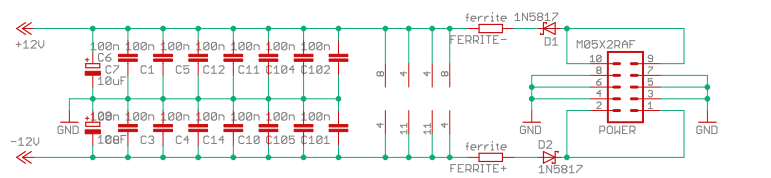

Introduction
Hi, today I want to share with you the basic knowledge of DIYing your own synthesizer modules - those do not need of the eurorack standard although in my case they are.
If you get started with eurorack format or any other modular like synth standard, but especially the eurorack standard - you will be most likely overwhelmed about the sheer number of manufacturers and available. You can have a simple look here on ModularGrid. You need a few weeks or even months, spending time reading some test articles on Amzona.de , or visiting Synthesizer Stores like SchneidersLaden to get a rough idea of the diversity of the market.
Why DIY?
But why in the world, if you have so many options already available of readily assembled modules to a good price tag, would you choose to get into DYI and build modules for yourself? There can be multiple reasons: - DYI is cheaper than readily available modules, although this is quiet debatable, since you have big initial costs for tooling and stuff. - DYI is interesting because you learn a lot how the modules work, how electronics in general works, and with time you get eventually better in detecting and fixing the errors you make
Is definitely worthwhile if you want to consider a hobby like electronics, and personally I think a modular synthesizer is the best way to get in contact with electronics and audio circuits as a hobby.
Next, we will briefly discuss what tools, components and consumables you need to start with this hobby. Only briefly, since this is discussed in multiple ways and forms in the internet. Also, I will narrow the scope down to modules,not case and power supply,since this is a whole other topic, and besides you should never build own power supply if you do not know what you are doing. Stay away from the mains!
Equipment
So here is the list of tools you will definitely need as a basic set:
-
a solder station and solder supplies
-
a DMM or multimeter to measure resistors, voltages and currents
-
a third hand (that eases your process of soldering by means)
-
a side cutter / wire cutter
-
an electronic pliers
-
as solder for THT (through hole, which you should begin with) you should order some lead-free solder with 1mm diameter
-
a good illuminated workplace
-
depending on your workbench a soldering mat, to prevent your bench from being burned!
These are the absolute essentials (you could theoreticaly miss out the DMM but it wont do you any good, since its cheap and you need it for basic testing) And,also, I bet, I forgot something.
If you want to enter the world of smd /smt technology (we want to use / describe only size 0805 here) you would additionally need:
-
as solder for smd soldering lead-free solder of diameter 0.3mm
-
tweezers
-
and optional some magnification glasses, but as said those are optional (e.g. I did not needed them yet, since 0805 is relatively big)
Testing your module
That is so far for the building part, but you also need some equipment for testing. It makes sense to first test the module in a separate rack with a separate power supply before putting it into your eurorack case and eventually in case of malfunctioning harm other modules. Here a small pod makes totally sense 4ms pod32.
Also, you need probably some input source for your module like cv, audio or gate signals, use a simple oscillator (cv,audio) or sequencer (gate) for that reason: Here Erica Synth Pico VCO or Erica Synth Pico VCO2 comes to mind.
Also, you need some output module, actually you can really start with this kit its an easy amplifier with a built-in speaker CLACKTRONICS - MINI SPEAKER KIT
Reverse Polarity protection
In this regard I also want to remind you to always use reverse polarity protection diodes in your builds. Use 1N5817 (THT) or MBR0540T1 (smd) for this matter. I could not find a picture so I copied from some befaco schematics so bear with me and ignore the 100nF capacitors.

While this picture might make not sense to you yet, it will as soon as you get learning to read electronics schematics (which you should if you wanna consider this hobby).
Some Manufactures and Modules to start
Lets finally go to the heart of this blog post, which manufactures and modules should you consider as a beginner?
I personally started my journey with the well documented erica synths edu series, then a few befaco modules (also well documented,also a bit cheaper over on exploding shed, regarding on shipping costs) and then modules from NonlinearCircuits (NLC) (same well documented), but there is no particular reason to do them in this order.
Conclusion and links
In conclusion the world of eurorack synthesizers and modules is a worthwhile (albeit money-consuming) endeavour, where you should totally go on the bandwagon if you have the need or urge to do so.
Last but not least some links thrown, so you know where to start looking for inspiration and DIY kits:
exploding shed, a company based in Leipzig Germany
3U Shop, based in Petershagen near Berlin, Germany
Synthesizer – So funktioniert elektronische Klangerzeugung by Florian Anwander The book that brought me into this hobby [German]
So, spread the sound!
( Still Todo: adding some pictures.)